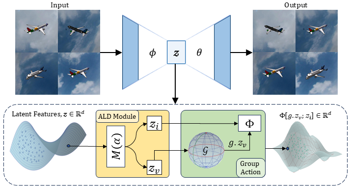
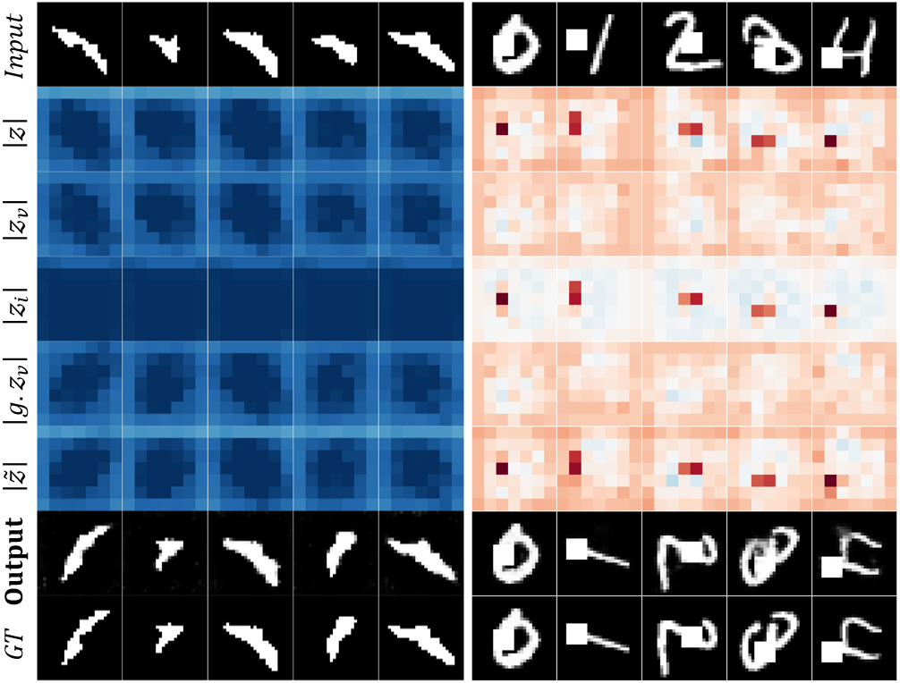
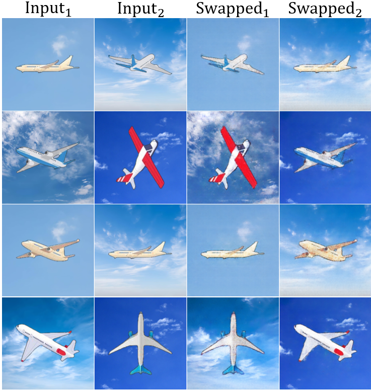
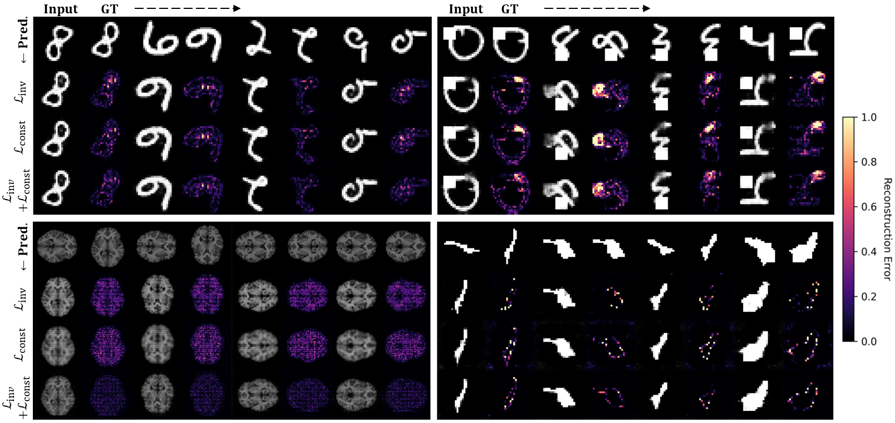

Abstract
Modeling group actions on latent representations enables controllable transformations of high-dimensional image data.
Prior works applying group-theoretic priors or modeling transformations typically operate in the high-dimensional data space,
where group actions apply uniformly across the entire input, making it difficult to disentangle the subspace that varies under transformations.
While latent-space methods offer greater flexibility, they still require manual partitioning of latent variables into equivariant and invariant
subspaces, limiting the ability to robustly learn and operate group actions within the latent space. To address this, we introduce a novel
end-to-end framework that for the first time learns group actions on latent image manifolds, automatically discovering transformation-relevant
structures without manual intervention. Our method uses learnable binary masks with straight-through estimation to dynamically partition latent
representations into transformation-sensitive and invariant components. We formulate this within a unified optimization framework that jointly
learns latent disentanglement and group transformation mappings. The framework can be seamlessly integrated with any standard encoder-decoder
architecture. We validate our approach on five 2D/3D image datasets, demonstrating its ability to automatically learn disentangled latent factors
for group actions, while downstream classification tasks confirm the effectiveness of the learned representations.
Method Overview

Our architecture employs an encoder–decoder framework with convolutional downsampling modules in the encoder and corresponding upsampling modules in the decoder.
The latent representation z of an image x is first partitioned into transformation variant (zv) and invariant (zi) components using learnable binary masks (M(α)) with straight-through estimation. The transformation variant (zv) is then transformed using group action mappings corresponding to the desired transformation g. The transformed zvg is combined with the invariant component zi to form the transformed latent representation φg(z) which is sent to decoder to reconstruct the transformed image.
The latent representation z of an image x is first partitioned into transformation variant (zv) and invariant (zi) components using learnable binary masks (M(α)) with straight-through estimation. The transformation variant (zv) is then transformed using group action mappings corresponding to the desired transformation g. The transformed zvg is combined with the invariant component zi to form the transformed latent representation φg(z) which is sent to decoder to reconstruct the transformed image.
During training:
• We randomly sample pairs of data points from the training set.
• The model is optimized using the total loss:
• Reconstruction loss
• Invariant loss
• Consistency loss
Here, sg[·] (stop-gradient) prevents gradients from flowing through the encoder, focusing learning on latent-space transformations rather than feature extraction adjustments.
Hyperparameters λi and λv are set to 1, and the threshold τ controls the sparsity of the learned latent partition. We jointly optimize all network parameters, including the Adaptive Latent Disentanglement (ALD) and group action modules, enabling automatic discovery of meaningful latent partitions while simultaneously learning their corresponding transformations.
Training uses the Adam optimizer (learning rate
1e-3), batch size 64, for 50 epochs, saving the model with the lowest validation loss.
Experimental Results

The above figure displays visualization of disentangled latent representations showing averaged magnitude of varying (zv) and invariant (zi) components for 3D adrenal shapes (left) and 2D rotated blocked MNIST (right), demonstrating effective separation of transformation-specific and transformation-invariant features.

The above figure shows the visualizations of latent factor swapping validation of learned disentanglement. By exchanging varying (zv) and invariant (zi) components between input pairs, our method generates novel combinations of object orientations with different backgrounds, demonstrating effective separation of transformation-sensitive and invariant factors without manual specification.

The above figure is related to the qualitative ablation study of different loss components on learning group action and reconstruction quality. In each dataset panel, Input and Ground-Truth (GT) pair visualizations (from left to right) with the predicted images operated after learn group actions (top to bottom). Top row: 2D MNIST digit and rotated and blocked MNIST datasets, learning SO(2) group actions, respectively. Bottom row: 3D brain MRIs and 3D adrenal shapes results, learning SO(3) group actions. The colormap indicates reconstruction error magnitude. Our model successfully learns the underlying SO(2) and SO(3) group actions across all loss configurations, with the joint optimization (